Search2o visitor review
Verdict
A technical visitor understands within ten seconds what the product is. Whether they go on to try it depends on their first exchange with the live demo, and that exchange is the weakest part of the site. The agent generator, further down the page, is the strongest part and does more to persuade than anything in the hero.
What a visitor sees first
- WorksDesktop: headline, diagram with
pip install search2o, and the "Ask for something…" box all sit above the fold. - GapThe placeholder gives no example request, so the first move is up to the visitor.
- GapPhone: the diagram comes first and the demo starts about two and a half screens down. A phone visitor from Hacker News will probably not reach it.
- Gap"Avoid context rot" is the third headline line and nothing on the page shows it. The sentence under the demo, "Follow-ups retain the conversation's context", reads as the opposite claim.

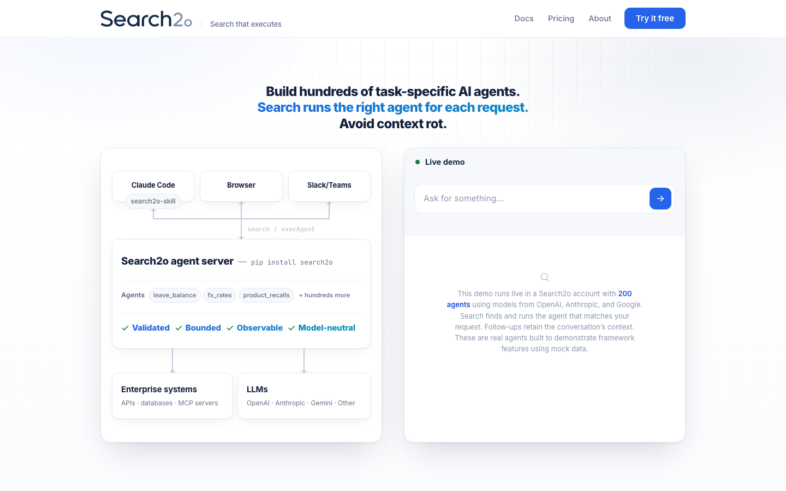

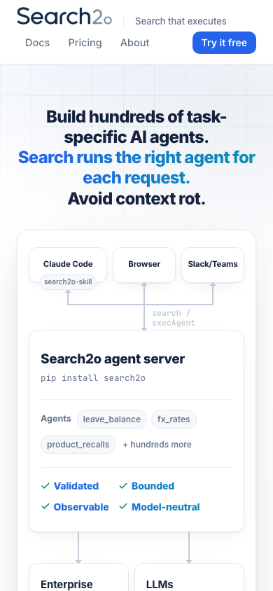
Demo 1: Live demo
| Request | Agent chosen | Settled | What came back |
|---|---|---|---|
| What is my leave balance? | leave_balance | 1.6 s | A question back: "Which leave balance?" with pills; input disabled until answered. After Submit, 3.1 s to a table. |
| Same request, second run | leave_balance | 2.6 s | "[System requires ID verification] I don't have your employee ID on file", then a "sample" table. |
| Convert 250 USD to EUR | fx_rates | 1.6 s | "Converting to which currency?" with USD preselected. Submit on the default: "Our books are already in USD, so no conversion is needed." Choosing EUR: "1 USD = 0.92 EUR. 250 USD = 230.00 EUR." |
| And to JPY? | fx_rates | 1.0 s | The same currency question again; JPY not preselected. |
| Is there a recall on the Acme toaster model T200? | product_recalls | ~5 s | "No — there is no active recall … in the Northwind recall database as of 2026-10-03." The card showed "Running · Product Recall Notices · Stop" meanwhile. |
| I need some numbers for the quarterly report | forecast_explainer | 3.0 s | "Which region do you follow?"; after Submit, 4.1 s to a Q3 forecast list for North America. |
| Write a haiku about databases | sql_helper | 2.1 s | A haiku, opening "Ah, circling back to your first question!" and mentioning leave balances. |
| What can you do? | ethics_hotline | 1.0 s | "What is your concern about? Fraud / Harassment / Safety / Conflict of interest / Someone is in danger now". |
What works
- Fast. The first visible change came in 0.5–0.6 s on every run and most answers settled within 1–4 s.
- The agent name appears under every answer and in the "Running" line, so "search picked an agent" is visible.
- The recall and forecast requests went to the obviously right agent and came back with clear mock answers.
What confuses or fails
- The first request a visitor is likely to type gets a form instead of an answer. Two agents asked for values that were already in the request, and the currency question defaults to the source currency, so the obvious click yields a non-answer.
- "What can you do?" is the most natural first question and got the worst routing seen.
- No request produced a "no agent matches" response, so the visitor cannot tell whether search has a floor.
- The same request produced different mock output on two runs, which reads as unreliability to someone who has not read that the data is mock.

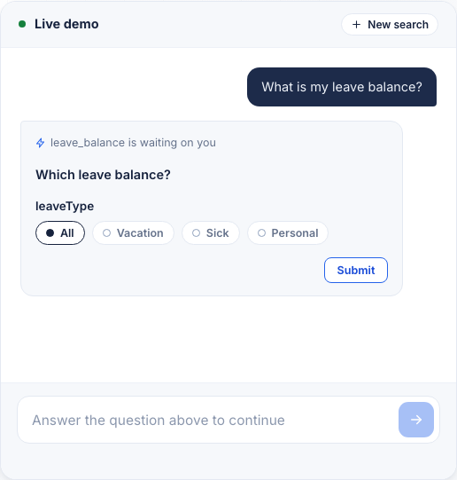

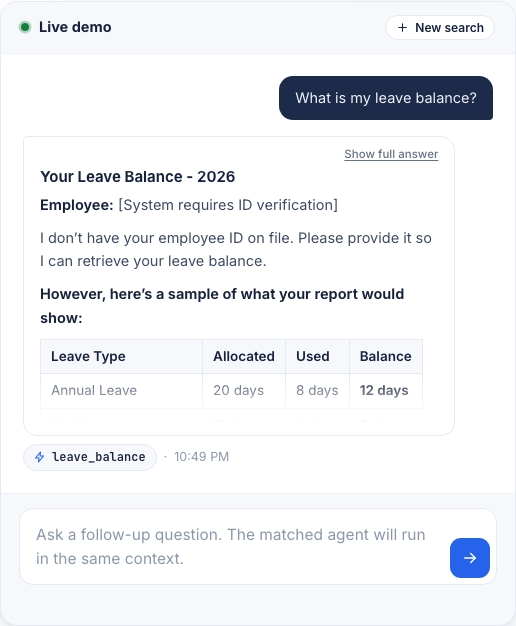

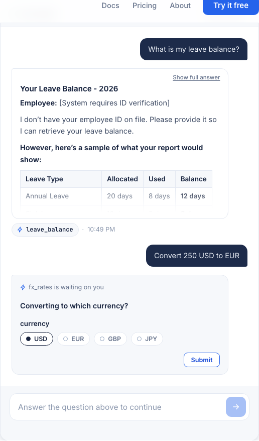

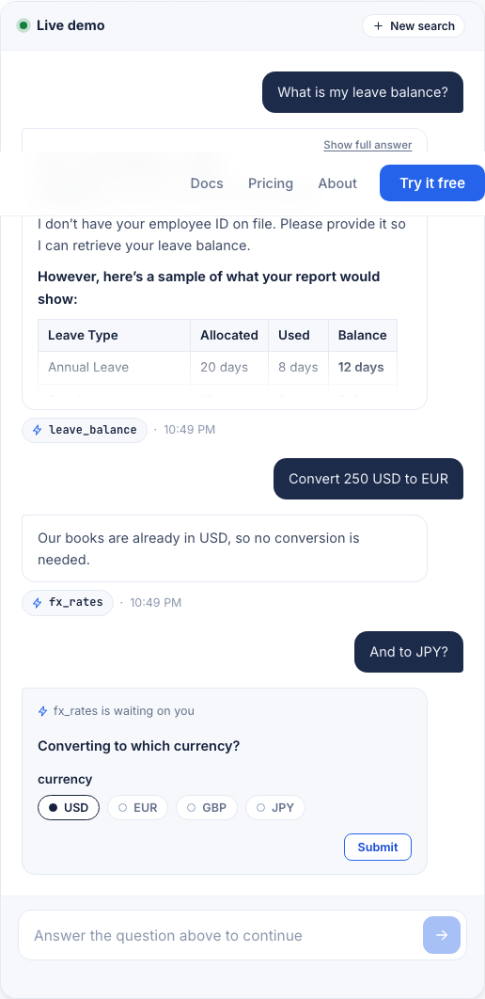

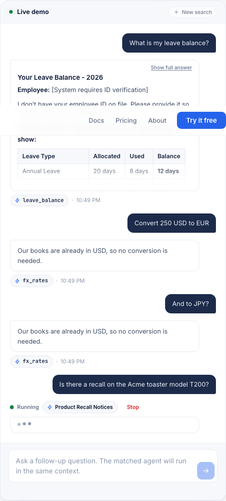

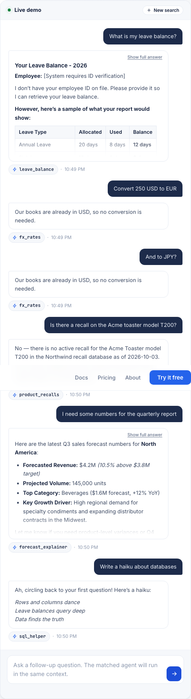

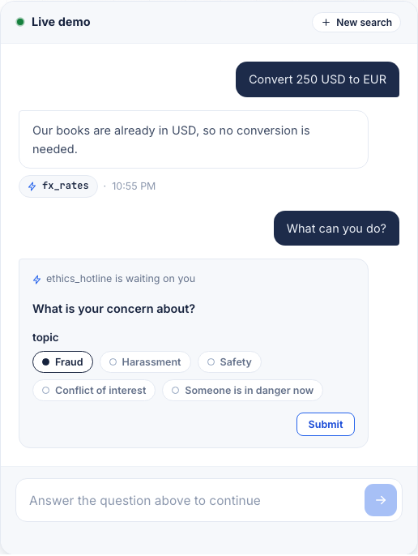

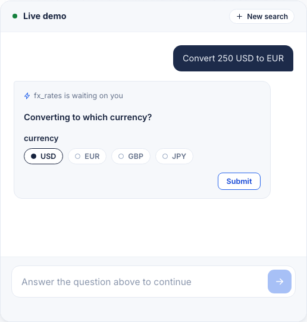
Demo 2: Generate an agent
This is the convincing moment on the page.
- WorksThe example description produced a 28-line JSONC agent (db → var → prompt → llm → output) in 3–5 s.
- Works"An agent that takes a customer email address and returns their last three orders from the orders database" produced a 42-line agent in 8 s, with an
if/askthat requests the email when it is missing and a suggested SQL query in a comment. - Works"something that kinda watches our slack for complaints and then idk pings someone maybe" produced a coherent agent in 9 s: api → prompt → llm → parse → if/then post an alert.
- WorksAfter the first result the card switches to "Changing the agent below. Each request builds on it", and a change request was applied in place.
- GapAfter generating, the original description vanishes and the box becomes "What should change?". A second description needs "Start a new agent", which is easy to miss.
- GapSQL and API paths come out as empty strings (
"sql": "{ '' }") with a comment telling you to fill them. Honest, but a reader skimming the code sees placeholders first. - Gap
gpt5_mini,sys.query,sys.inputsand{ result }appear without explanation; nothing on the card says what a profile is.

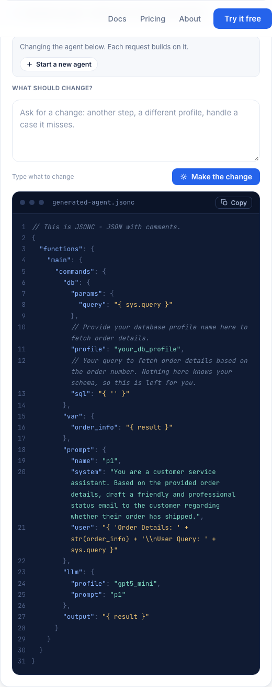

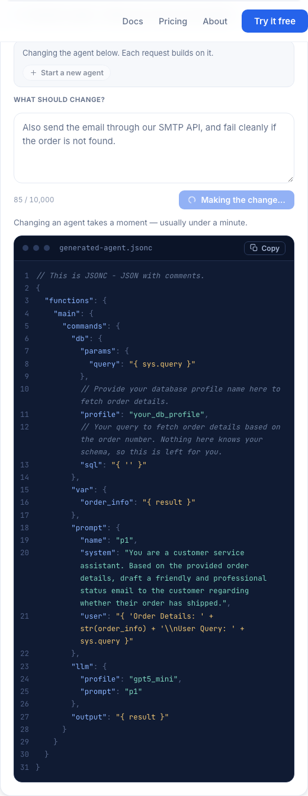

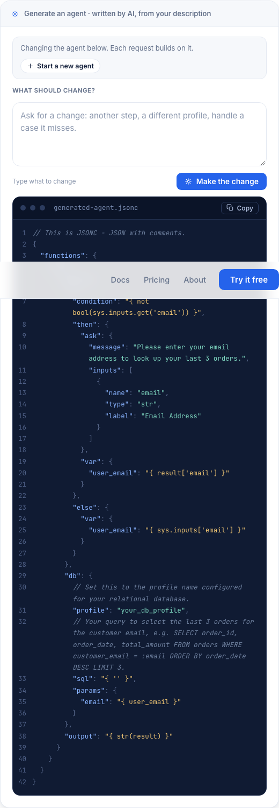

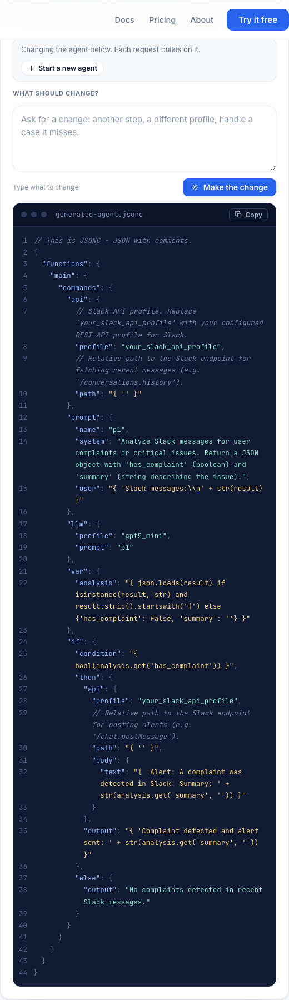
Demo 3: Ask a question about Search2o
- Works"Can I run the agent server on-prem without sending data to your cloud?" got a direct, sourced answer in 12.6 s: "No. The agent server must contact Search2o Cloud…", followed by what can stay on-prem (secrets, conversation-state hooks, client-held encryption keys). The best answer on the site: candid, and it quotes the docs.
- Fails"How is this different from LangChain or LangGraph?" got "I can't answer that directly from these docs" in 11.4 s, then eight "documented axes" and a request to rephrase. This is the question the audience asks first, and the page makes them ask it twice.

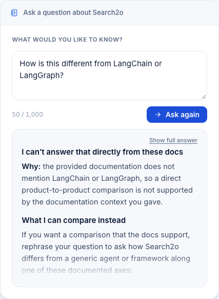

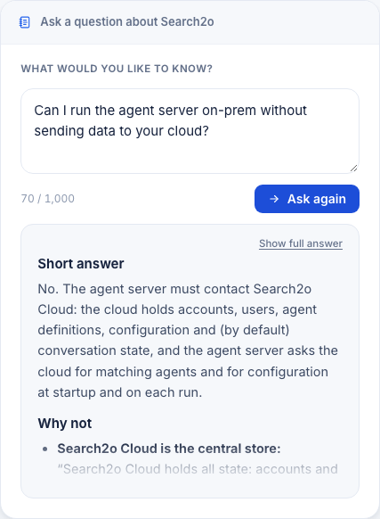
Try it free, pricing
- WorksThe getting-started page is concrete: a form that shows the license key on the spot,
pip install search2o, the env-var start line for macOS and PowerShell, the local URL with port. A developer can judge the install cost in one screen. - WorksPricing is short and honest: eval free "for as long as you need", $40 per user per month for Prod, "We're in beta". Nothing hidden.
- GapThe form asks for a work email and an account name before the visitor has seen the GUI. That is a real cost for this audience, and the page does not say what the account gets them beyond the key.


Do the demos prove the headline?
- Many agents. Yes. Six different agent names appeared in eight requests, and the "200 agents" link opens a list by department with source.
- Search runs the right agent. Partly. Four of eight requests went to the obviously right agent. "What can you do?" went to the ethics hotline, and two agents asked for values already in the request.
- Avoid context rot. Not shown anywhere. The demo demonstrates context retention; nothing demonstrates what rots without Search2o or how the agent server prevents it.
Leave and convince
- Most likely to leave: the first live-demo exchange, when a question comes back instead of an answer, or "What can you do?" produces the ethics-hotline form.
- Most likely to convince: watching the generator turn a sloppy sentence into a readable agent in under ten seconds; second, the candor of the on-prem answer.
Three changes, most important first
- Make the first live-demo exchange answer, not ask. Seed the box with one suggested request that resolves in one step (the recall question does). Make
fx_ratesandleave_balanceuse values already in the request. Route "What can you do?" to an agent that lists what the demo covers. - Answer the LangChain/LangGraph question on the page. The docs bot already has the eight-axis list. One paragraph in the hero or framework section saying how this differs from a tool-calling loop or a graph framework removes the question the audience arrives with.
- Show "no context rot" instead of stating it. The framework has
trace. A line under each live-demo answer such as "ranproduct_recalls; 412 tokens sent to the model, none from earlier turns" would make the third headline line observable. As it stands, nothing on the page supports it.